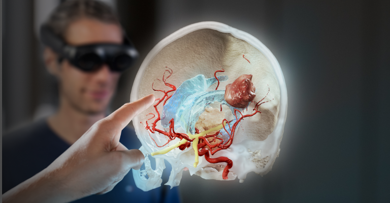
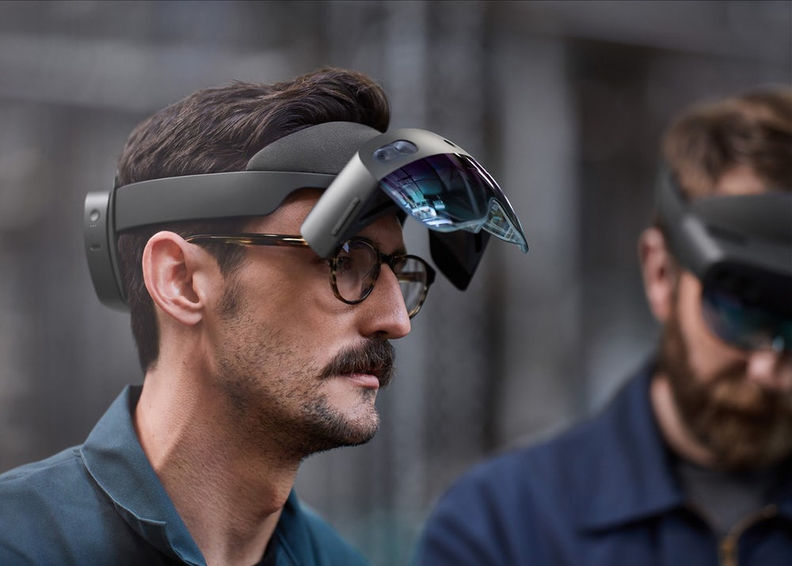

is another product designed for the enterprise and industrial segment of the workfroce
which
enables the same Augmented Reality functionality – with the added bonus of also being tightly integrated
with the Microsoft Office 365 for Business suite of apps and tools.

Magic Leap
is a technology which was poised to take on the Enterprise and Healthcare
segments of
Augmented Reality.
It is a technology that was founded in 2010 and continues to develop a series of augmented
reality
headsets
with portable tiny computers attached that can help you in several facets of corporate or
medical work,
as
well as now with Magic
Leap 2, "The MetaVerse".
Last updated 3 mins ago

HoloLens
is another product designed for the enterprise and industrial segment of the
workfroce
which
enables the same Augmented Reality functionality – with the added bonus of also being tightly
integrated
with the Microsoft Office 365 for Business suite of apps and tools.
Last updated 3 mins ago
Much of Augmented reality has been touted as a way for connection with individuals and services.
Initially,
in it’s infancy in the very early 2010’s, Augmented Reality was dreamed about as a way to see things
like
directions on your mobile device, or to use a headset or glasses to take photos or see real world
metadata
overlayed on your screen. This use case, while intriguing, never really caught a lot of traction
with
main
stream humans. Augmented Reality didn’t seem to hold much of an allure in contrast to conventional
reality
or even virtual reality. Until that is, Pokemon Go. This was the world’s first truly transformative
AR
experience, and it paved the way for many many clones that did not live up to the same popularity or
hype.
However, not many AR experiences have been capable of embodying that same luster. The future of
whether
or
not Augmented Reality video games can truly be “here to stay” is as yet undecided.
The HoloLens 2 could be amazing for remote assistance
However, where Augmented Reality appears to shine is within niche environments for work and
productivity.
Imagine, being a doctor and being able to project a brain scan of a patient into your field of view,
and
manipulate that scan, or walk around within it to see potential tumor growth or synapse
deterioration?
Imagine being at work, on an industrial oil rig without a supervisor, and having them use remote
assistance
with you to physically draw out the steps you should take to complete a task, in real time, and
project
the objects
into your awareness. These are use cases which have real tangible meaning to human beings, and have
wide
reaching positive impacts on mankind and
civilization as a whole.
But it's GREAT for Work, and Stylish too!
But does AR have a dark side? Could AR be used to tempt individuals to commit theft? Could it be used to
tempt people with food allergies or insensitivity, or diabetes to eat things they shouldn’t? AR
fundamentally tampers with awareness. What we see through our eyes and hear through our ears is the
minds
awareness and perception creating formations from the environment. The ideas of tampering with awareness
to
allow sexual predators to “live out” fantasies, or to allow psychopaths to bring machinations to some
semblance of “life” is something that is heavily discussed in the circles of those who philosophize
about
the morality of augmented reality and it’s potential harms and benefits.
A sinister future could be lying in wait if we are not careful
Right now there are absolutely no laws preventing this kind of use case from AR, so in the future it is
up
to society to police and enforce emerging technologies such as AR to ensure they are used for the good
they
can produce in the world, not something more sinister.
While HoloLens seems to be enterprise focused and running full steam ahead with integration into apps
like
Dynamics 365, Magic Leap appears to be taking a Magic Leap down the toilet. After a round of covid
inspired
layoffs and CEO’s walking out, Magic Leaps valuation dropped by over 93% within the six months between
Late
2019 and June 2020. Magic Leap has pivoted and since announced it’s Magic Leap 2 platform, designed not
only
for medical device and enterprise functionality but also “the metaverse”, which, if the company hadn’t
continued to fund raise and gain significant financial traction, would sound a lot like a last ditch
effort
of a vaporware producer to fleece a handful more investors before inevitably taking the money and
running.
(See Infinium Phantom)